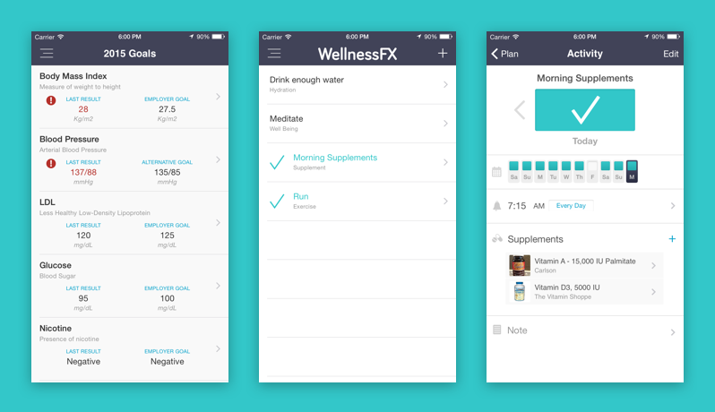
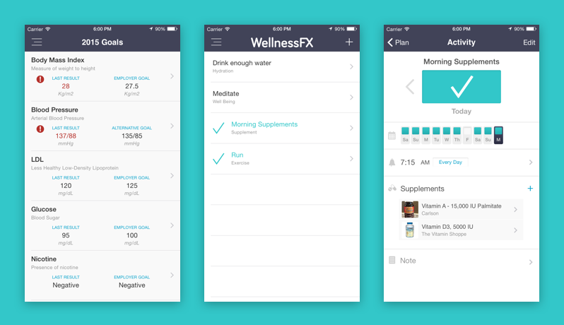

WellnessFX iPhone App
Making Health Data Portable
Prioritizing Tasks
With a lot of nooks and crannies in the web app, the iPhone app is not intended to mirror all functionality. The team prioritized which key features were most important and relevant to have on a mobile device, and one feature (Activity Tracking) was even introduced on the iPhone app before the web app.
I worked with the iOS developer to design key screens and functionality, and provide feedback on designs she took the lead with.
 
